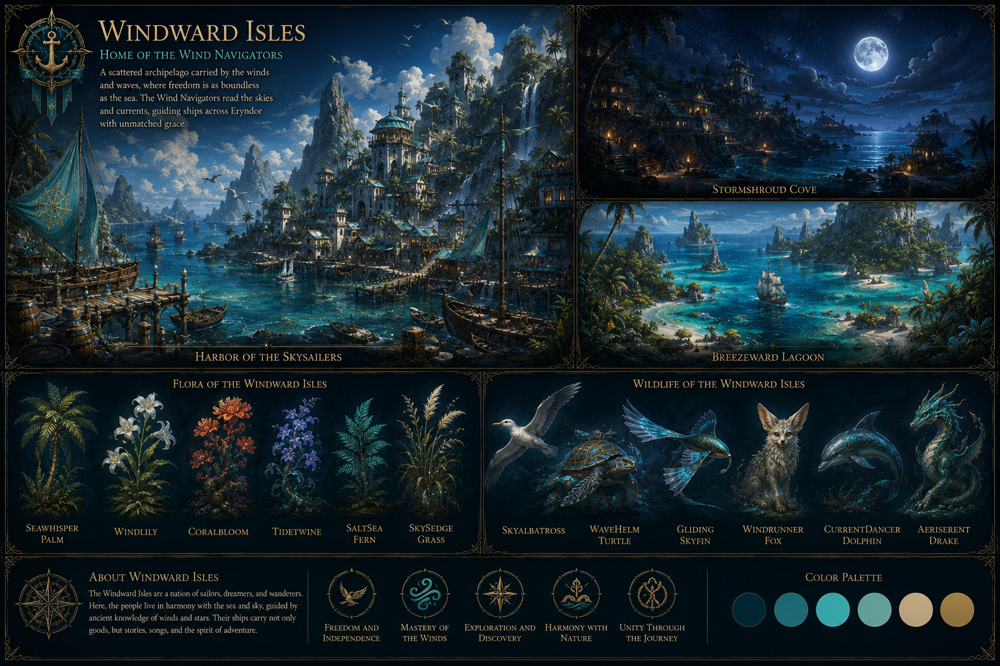
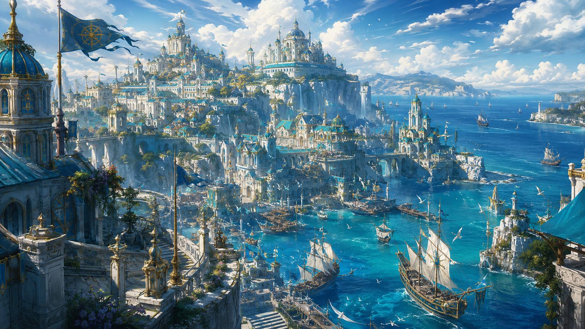
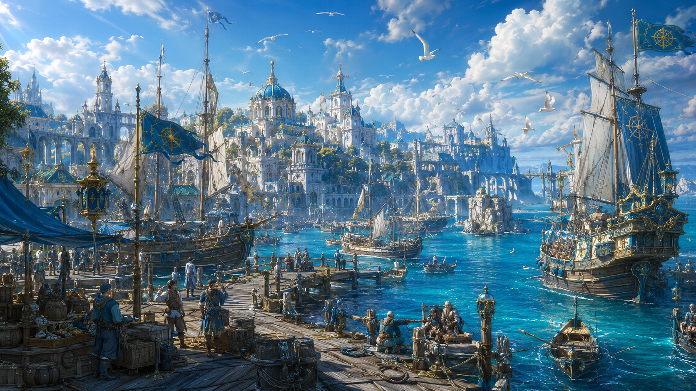
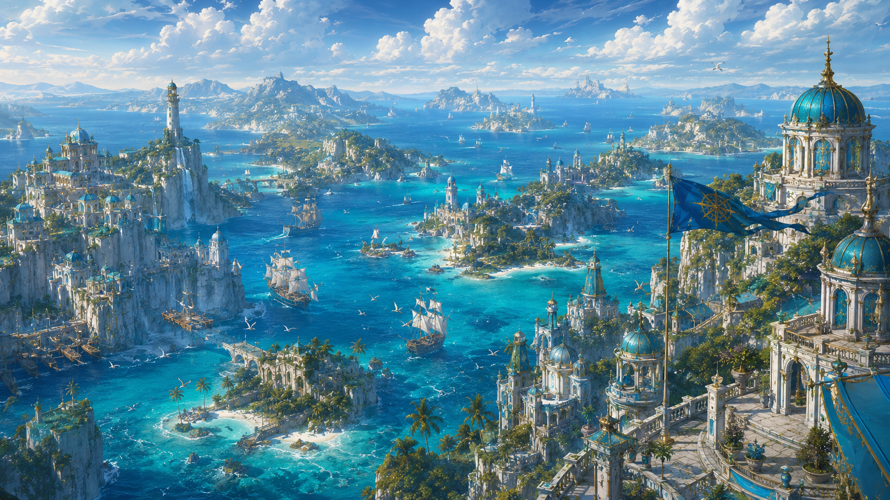
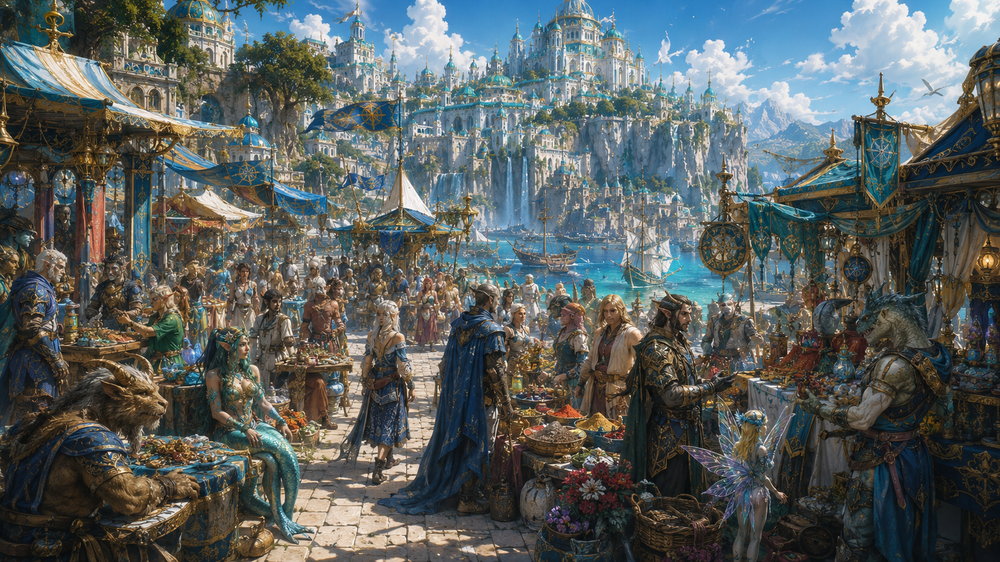
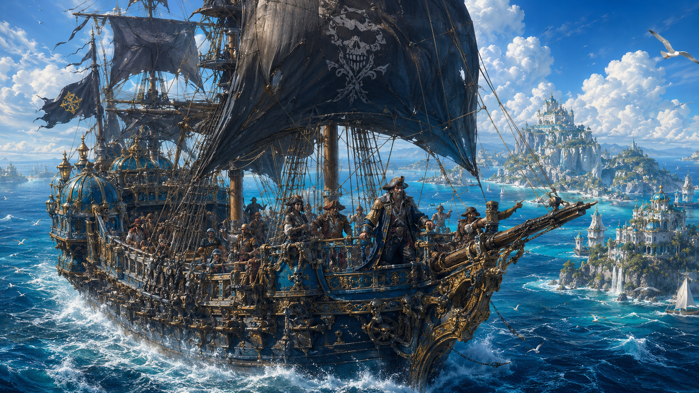
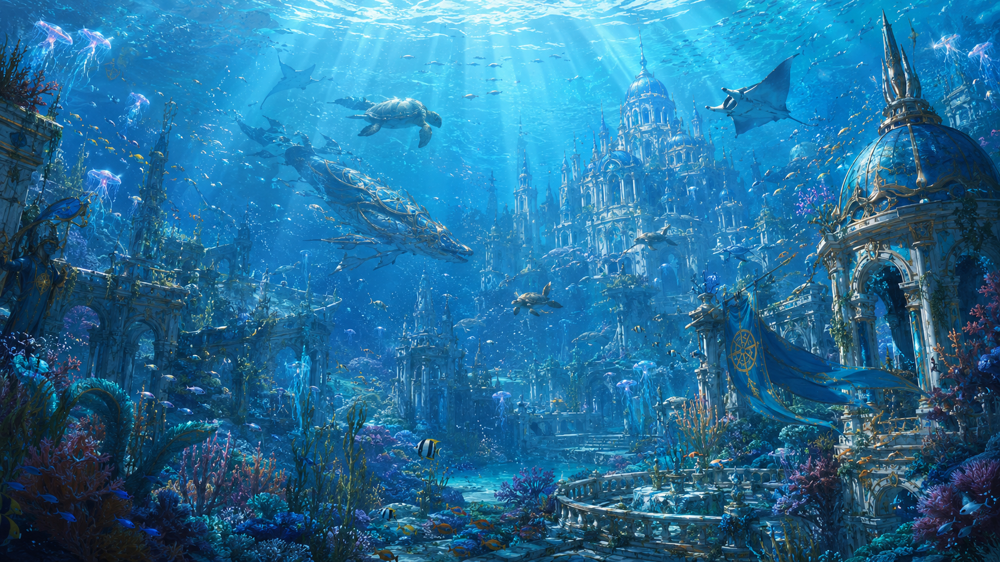
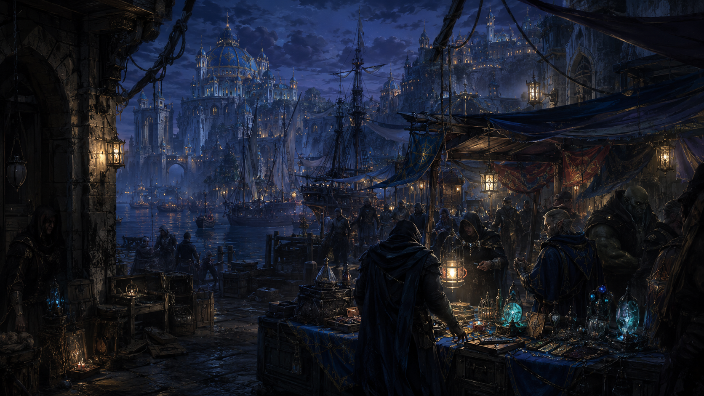
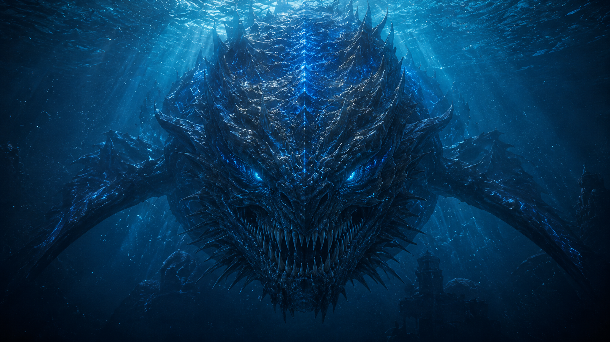
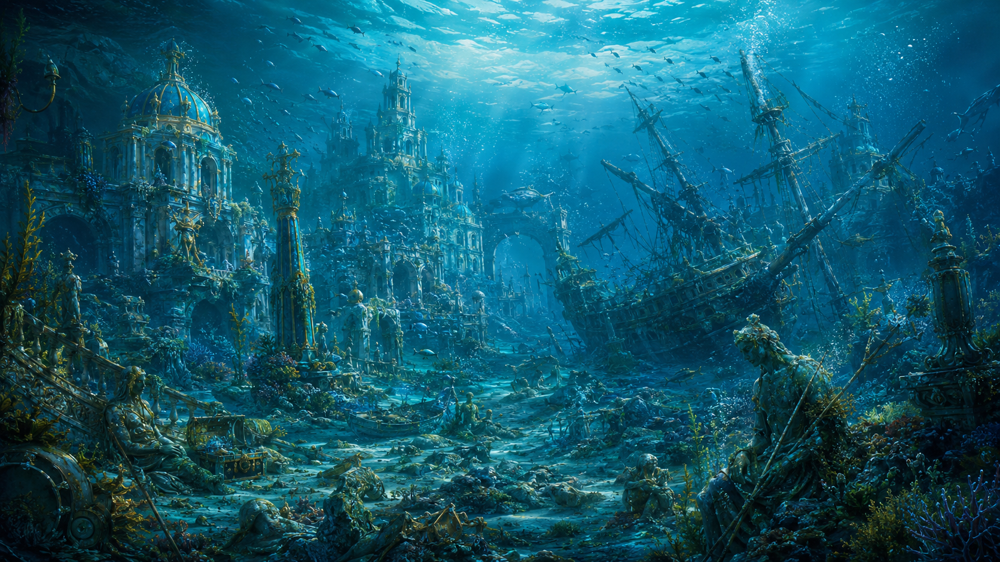

A vast archipelago of bustling ports, ancient sea routes and distant islands, where merchants, sailors, pirates and magical races gather beneath the open skies of Eryndor.
Discover Windward IslesThe Windward Isles are not a single landmass but a vast collection of islands connected by trade routes,
ports and constant movement across the sea. Their location has made them one of the most culturally diverse
regions in Eryndor, attracting travelers from almost every corner of the world.
Aerhaven grew around its enormous harbor, where merchant vessels, fishing ships and foreign fleets arrive
every day. Markets fill the streets near the docks, selling goods brought from distant nations, while smaller
islands are home to isolated settlements, pirate hideouts and communities that prefer to remain outside the
influence of the capital.
The Maritime Council governs the archipelago, although controlling every island is nearly impossible. Humans,
Merfolk, Beastfolk and magical travelers live throughout the region, and wind, navigation and ocean magic are
essential for crossing the unpredictable waters. The Skyward Fleet keeps the main trade routes safe, but
piracy remains part of life beyond the protected ports.
Beneath the tropical beauty lies a much more dangerous world. Coral reefs, mangroves and island forests
support countless animals, while sea creatures dominate the surrounding waters. Ancient wrecks and sunken
cities rest beneath the waves, and farther into the depths live enormous predators—including the legendary
Leviathan.

Aerhaven
The Maritime Council
Humans, Merfolk, Beastfolk and Magical Travelers
Wind, Navigation and Ocean Magic
Tropical, Windy and Oceanic
The Skyward Fleet








